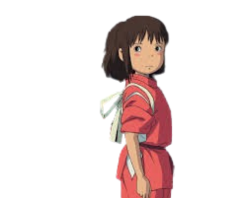

2001 Spirited Away
Spirited Away tells the story of Chihiro Ogino, a young girl who becomes trapped in a strange world of spirits and magical beings. Her journey becomes a quest to free herself and her parents, uncovering mysteries about the magical bathhouse and the creatures within.
